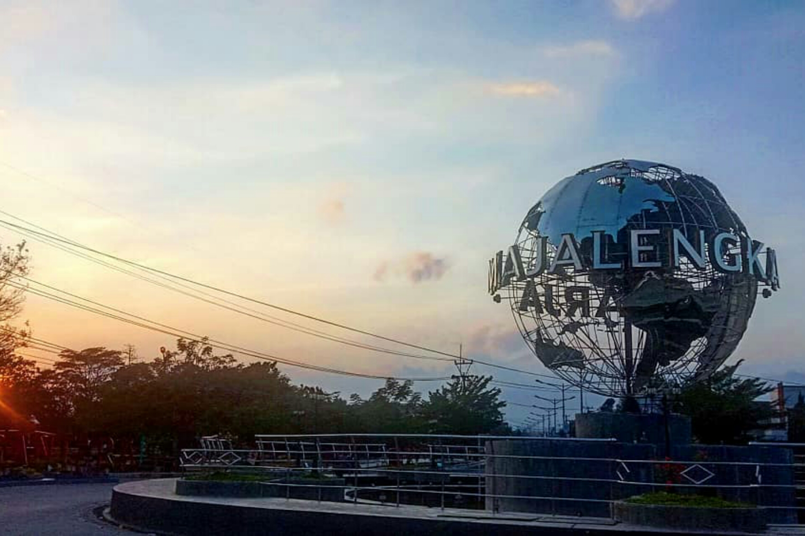
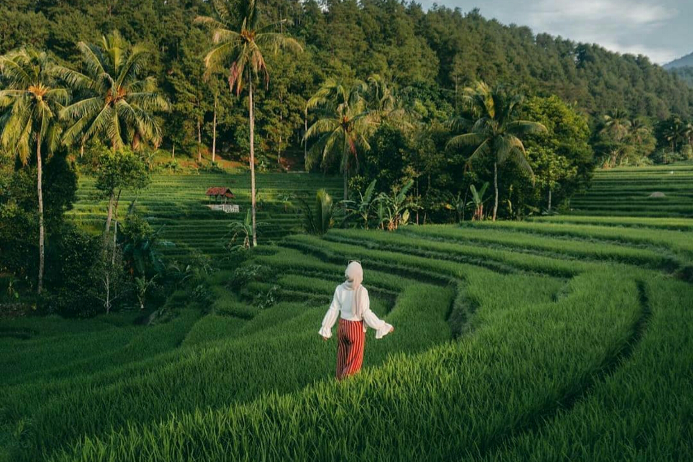
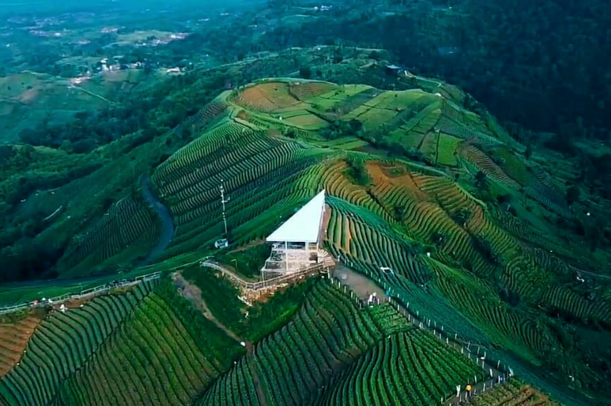
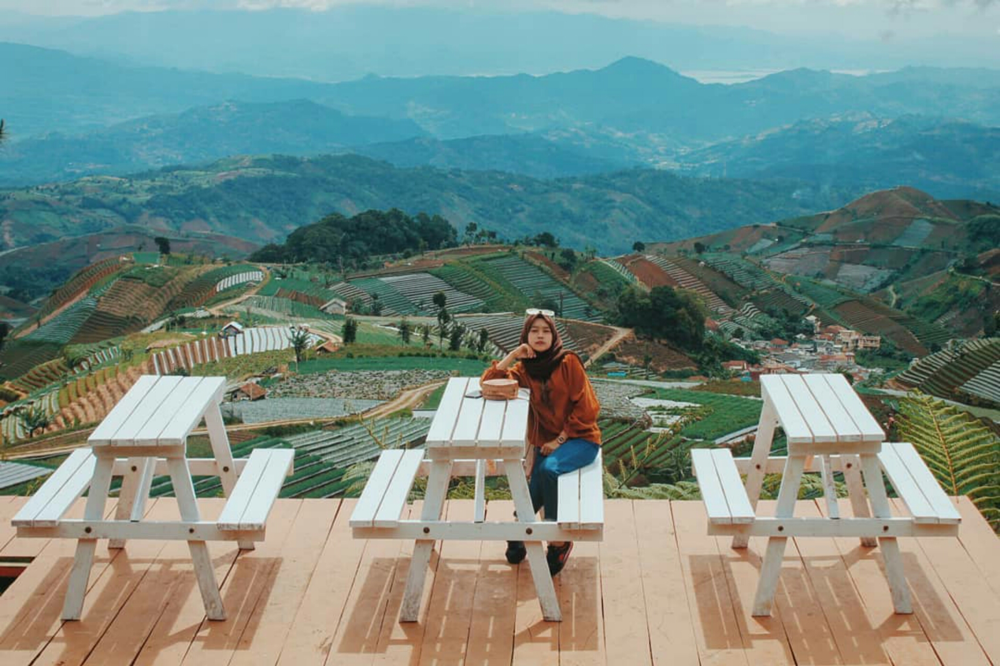
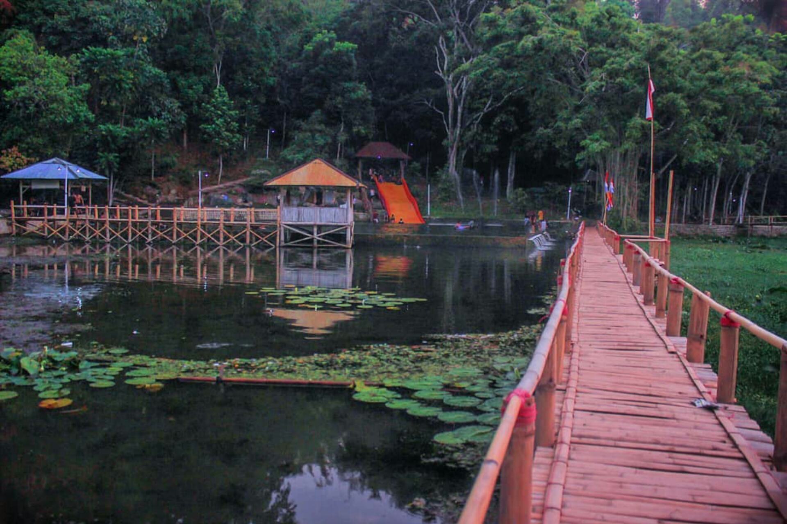
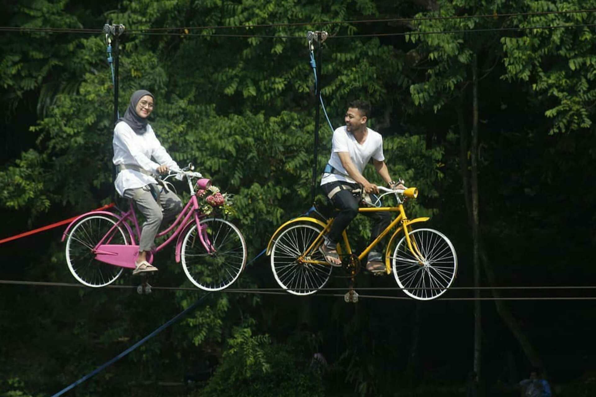
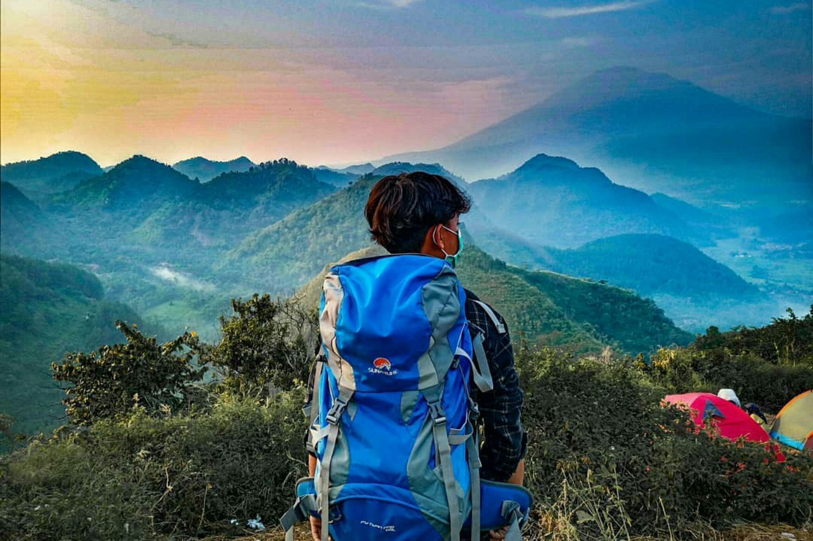
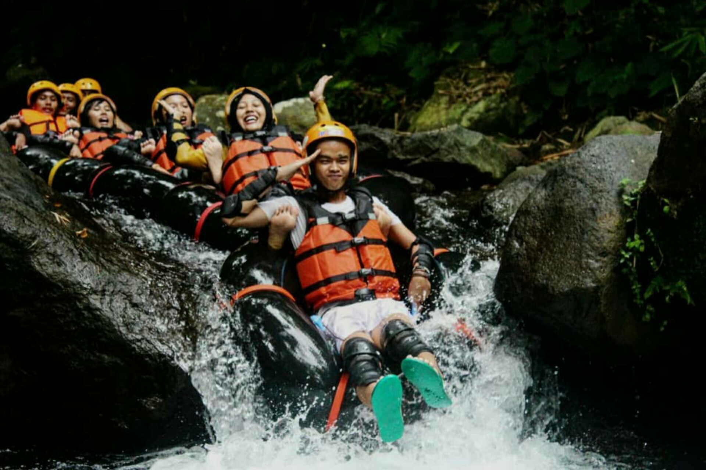

Sejarah

Majalengka berasal dari bahasa Cirebon yaitu dari kata Majae dan Langka, kata "Maja-e" artinya Buah Maja-nya, sedang kan kata "Langka" artinya Hilang. Asal usul kota Majalengka berasal dari Nyai Rambut Kasih dan Pangeran Muhammad.Pada waktu itu kerajaan Cirebon mengutus Pangeran Muhammad untuk mencari obat yaitu “Buah Maja” sedangkan buah itu hanya ada di kerajaan “Sindang Kasih” yang dipimpin oleh Nyi Rambut Kasih.
Pangeran Muhammad datang ke Sindangkasih bukan hanya mencari buah maja tetapi sambil menyebarkan Agama Islam, padahal saat itu kerajaan Sindangkasih sudah menganut Agama Hindu.Setelah mendengar itu selaku pemimpin kerajaan Nyi Rambut Kasih akan memberikan buah itu tetapi ada syaratnya, Pangeran Muhammad harus masuk Agama Hindu, sedangkan ia menolak untuk masuk agama Hindu.Maka Nyi Rambut Kasih murka dengan manghilangkan kerajaannya dan seluruh rakyatnya jadilah hutan dan gunung. Tetapi keinginan Pangeran Muhammad untuk mendapatkan buah itu sangat besar karena Nyi Rambut Kasih tidak mengabulkannya, maka Pangeran Muhammad bertapa / bersemedi agar diberi namun sampai tutup usia tidak diberi.
Beliau bertapa dibukit dan bukit itu diberi nama “MARGATAPA” dan kerajaan Sindangkasih menjadi hutan dan gunung. Akhirnya daerah itu disebut “Majalangka / Majalengka” sampai sekarang menjadi kota kecil.
Geografis

Secara geografis Kabupaten Majalengka terletak di bagian timur Provinsi Jawa Barat. Kabupaten Majalengka terletak pada titik koordinat yaitu Sebelah Barat 108° 03' - 108° 19 Bujur Timur, Sebelah Timur 108° 12' - 108° 25 Bujur Timur, Sebelah Utara 6° 36' - 5°58 Lintang Selatan dan Sebelah Selatan 6° 43' - 7°44.
Bagian utara wilayah kabupaten Majalengka adalah dataran rendah, sedang di bagian selatan berupa pegunungan. Gunung Ciremai (3.076 m) berada di bagian timur, yakni di perbatasan dengan Kabupaten Kuningan. Gunung ini adalah gunung tertinggi di Provinsi Jawa Barat, dan merupakan taman nasional, dengan nama Taman Nasional Gunung Ciremai. Sebelah utara berbatasan dengan Kabupaten Indramayu, Sebelah timur berbatasan dengan Kabupaten Cirebon dan Kuningan, Sebelah selatan berbatasan dengan Kabupaten Ciamis, Sebelah Barat berbatasan dengan Kabupaten Sumedang.
Wisata
Majalengka merupakan salah satu kabupaten yang sangat maju dibidang wisatanya,dimana wisata disini sangatlah indah karena berada di daerah dataran tinggi.
Panyaweuyan

Kondisi
Bukit Panyeweuyan Argapura atau biasa disebut Bukit Panyeweuyan termasuk destinasi yang cocok didatangi oleh Anda yang memiliki hobi fotografi.Pemandangan hijau nan asri dari kawasan terasering ini kerap dijadikan sebagai spot foto favorit para travel fotografer. Selain indah, tempat ini pun sangat sejuk sehingga para wisatawan betah berlama-lama di sana.
Menurut laman Pesona Indonesia, bukit ini adalah bukit terindah di Jawa Barat.
Lokasi
Bukit ini terletak di Dusun Cibuluh Desa Tejamulya Kecamatan Argapura, Kabupaten Majalengka.Tepatnya, bukit berbentuk terasering ini berada di kaki Gunung Ciremai, gunung tertinggi di Jawa Barat dengan ketinggian mencapai 3.078 mdpl.
Bukit Mercury Sayangkaak

Kondisi
Nama tempat wisata ini adalah Bukit Mercury Sayang Kaak. Meski masih asing terdengar, tempat ini ternyata menyimpan segudang daya tarik wisata alam. Sekretaris Mitra Pariwisata Gunung Ciremai (MPGC) Bukit Mercury Sayang Kaak, Tisna mengatakan, tempat ini menawarkan wisata alam dengan background hamparan terasering tanaman bawang.wisatawan bisa menikmati beragam paket wisata yang ditawarkan pengelola. Terdapat dua paket wisata yaitu paket wisata umum dan wisata edukasi. Untuk wisata umum, wisatawan bisa berkeliling bukit sembari berfoto mencari spot-spot menarik. Spot-spot ini juga tampak apik dan cocok untuk mengisi feed Instagram.
Lokasi
Lokasi tempat wisata ini tidak terlalu jauh dari pusat kota majalengka. Tepatnya berada di Blok Cibuluh, Desa Tejamulya, Kecamatan Argapura, Kabupaten Majalengka, Jawa Barat.
Situ Janawi

Kondisi
Di Situ Janawi, terdapat danau dan kolam yang dikelilingi permukiman di sebelah selatan yang dibatasi perbukitan.Pengunjung diperbolehkan untuk mandi yang airnya langsung dari mata air.Mandi di kolam yang langsung dialiri mata air jauh lebih menyehatkan.Kolam dari mata air itu memiliki kandungan senyawa yang bisa mengobati beberapa penyakit ringan.Misalnya pegal-pegal, encok dan rematik.Tempat wisata di Majalengka ini memiliki kandungan yang dapat menyembuhkan penyakit
Lokasi
Situ Janawi berlokasi di Desa Payung, Kecamatan Rajagaluh, Kabupaten Majakengka, Jawa Barat.
Situ Cipanten

Kondisi
Situ Cipanten Majalengka, Jawa Barat merupakan destinasi wisata alam dengan panorama yang apik. Obyek wisata satu ini jadi salah satu alternatif berlibur masyarakat sekitar atupun juga para traveler. Belakangan, pamor dari Situ Cipanten Majalengka ini naik daun. Hal tersebut berkat banyaknya pengunjung yang mengunggahnya di media sosial.Situ Cipanten ini merupakan danau yang memiliki luas kurang lebih satu hektar. Dahulu, digunakan untuk pengairan dan juga perikanan. Sementara itu sumber air di Situ Cipanten ini berasal dari tujuh mata air, maka dari itu meskipun musim kemarau tiba, tidak akan kering.
Bukan tanpa alasan para pengunjung berdatangan. Pasalnya, destinasi wisata di Majalengka ini memiliki fasilitas yang cukup bagus. Misalnya saja disuguhkan berbagai spot kekinian yang biasa digunakan untuk swa-foto. Ada Jembatan Cinta, Perahu Titanic, dan lain-lain. Selain itu ada beberapa wahana yang bisa dicoba, ada sepeda air, arena outbond, dan berbagai fasilitas lainnya yang menarik.
Lokasi
Situ Cipanten ini berada di Desa Gunung Kuning, Kecamatan Sindang, Kabupaten Majalengka.
Sanghyang Dora

Kondisi
Bukit Sanghyang Dora ini di anugerahi view alam hijau bebukitan yang sungguh mendamaikan. Berada disini akan dimanjakan oleh pemandangan Kota Leuwimunding dari ketingian. Objek wisata ini sangat cocok untuk sejenak mengasingkan diri dari keriuhan kota. Jika muncak atau mendaki gunung terlalu memakan banyak waktu, namun ke puncak bukit ini kita bias menikmatinya cukup sehari saja.
Lokasi
Bukit Sahyang Dora terletak di Desa Leuwikujang, Kecamatan Leuwimunding, Kabupaten Majalengka Jawa Barat.
Cikadongdong River Tubing

Kondisi
Cikadongdong River Tubing merupakan salah satu destinasi wisata yang terdapat di desa Payung Kecamatan Rajagauh, Kabupaten Majalengka. Wahana bermain air berada di aliran sungai Cikadongdong dengan hulu air dari Gunung Ciremai, yang pasti keasrian dan kejernihan airnya tidak diragukan lagi.
Arus Cikadongdong river tubing, jaraknya lumayan jauh mencapai 250 meteran dengan lintasan berliku dan banyak jeram. Meski banyak bebatuan bisa tetap aman karena pengelola sudah membuat jalur yang aman dengan menata bebatuan tersebut, selain itu di bagian-bagian tertentu ada tim yang berupaya menjaga agar peserta olah raga river tubung bisa tetap aman.Pengunjung juga bisa aman karena pengelola sudah memberikan pelindung bagi peserta, seperti helm, pelindung tangan, lutut dan pelampung.
Mungkin wisata air di Cikadongdong ini akan lebih menarik dibanding wisata air lainnya, selain udara dingin, air yang jernih juga asri. Di sepanjang aliran sungai dipenuhi pepohonan yang sangat rimbun hampir menutupi seluruh area sungai. Malah di beberapa titik nyaris tak ada sinar matahari yang masuk ke area sungai.
Lokasi
Objek wisata ini berlokasi di Desa Payung, Kecamatan Rajagaluh, Kabuaten Majalengka. Lokasi ini bukan satu-satunya destinasi wisata unggulan di Majalengka, masih banyak destinasi wisata lain yang tidak kalah menarik.